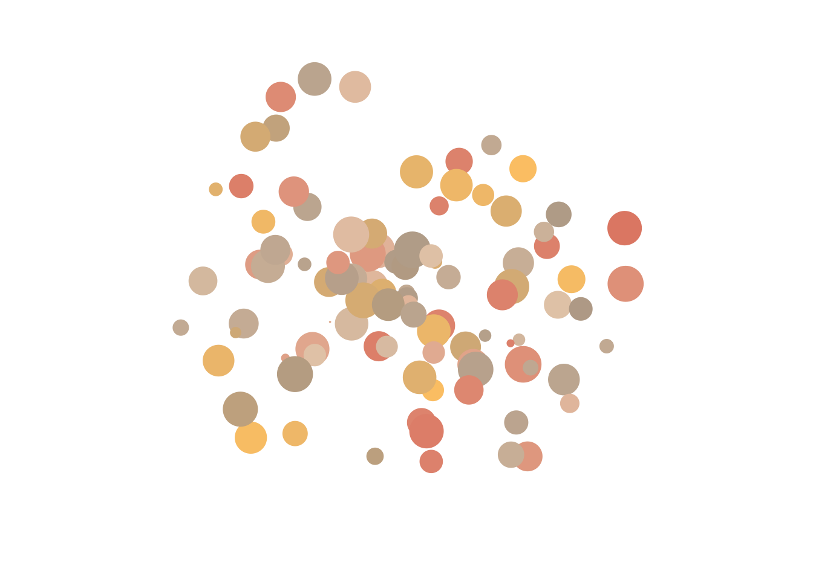
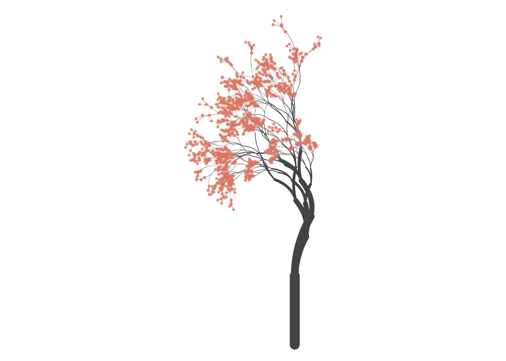
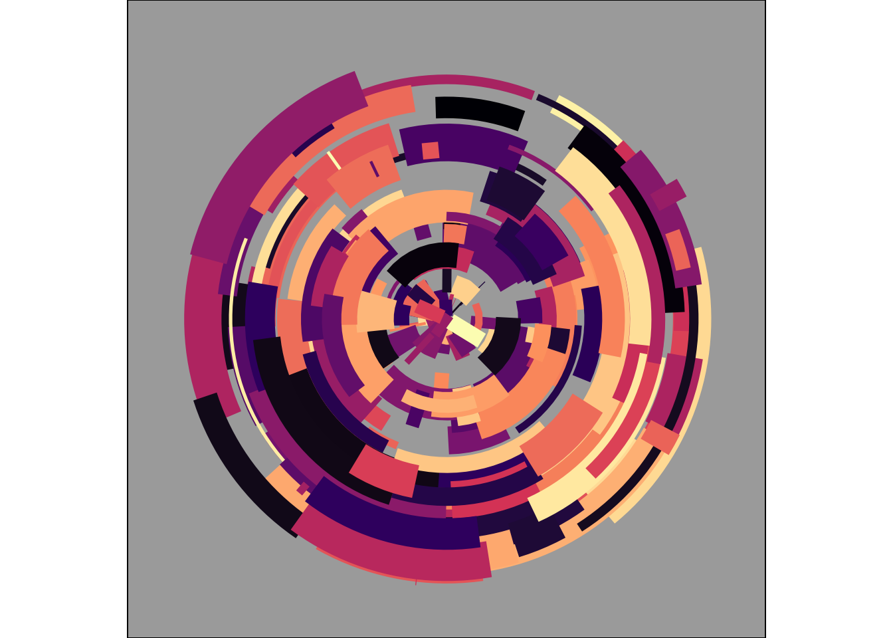

#importing library
library(ggplot2)
library(tibble)CHOYOA-03
Task 1
Getting Started
#viewing data frame
mpg# A tibble: 234 × 11
manufacturer model displ year cyl trans drv cty hwy fl class
<chr> <chr> <dbl> <int> <int> <chr> <chr> <int> <int> <chr> <chr>
1 audi a4 1.8 1999 4 auto… f 18 29 p comp…
2 audi a4 1.8 1999 4 manu… f 21 29 p comp…
3 audi a4 2 2008 4 manu… f 20 31 p comp…
4 audi a4 2 2008 4 auto… f 21 30 p comp…
5 audi a4 2.8 1999 6 auto… f 16 26 p comp…
6 audi a4 2.8 1999 6 manu… f 18 26 p comp…
7 audi a4 3.1 2008 6 auto… f 18 27 p comp…
8 audi a4 quattro 1.8 1999 4 manu… 4 18 26 p comp…
9 audi a4 quattro 1.8 1999 4 auto… 4 16 25 p comp…
10 audi a4 quattro 2 2008 4 manu… 4 20 28 p comp…
# ℹ 224 more rows# displaying data frame through a plot
mpg %>%
ggplot(aes(displ, hwy, colour = drv)) +
geom_point()
#displaying the data through the vary size of dots
mpg %>%
ggplot(aes(displ, hwy, colour = drv, size = cyl)) +
geom_point(show.legend = FALSE) +
theme_void() +
scale_color_brewer()
# introduce the function "scale_color_brewer"
mpg %>%
ggplot(aes(displ, hwy, colour = drv)) +
geom_point(show.legend = FALSE, size = 4) +
geom_point(show.legend = FALSE, size = 1, colour = "#222222") +
coord_polar() +
theme_void() +
scale_color_brewer()#instead of using mpg, data frame, we can create our own
# the command set.seed(), ensures that the pseudorandom number will always generate the same
set.seed(1)
n <- 50
dat <- tibble(
x0 = runif(n),
y0 = runif(n),
x1 = x0 + runif(n, min = -.2, max = .2),
y1 = y0 + runif(n, min = -.2, max = .2),
shade = runif(n),
size = runif(n)
)
dat # generated data frame is called dat # A tibble: 50 × 6
x0 y0 x1 y1 shade size
<dbl> <dbl> <dbl> <dbl> <dbl> <dbl>
1 0.266 0.478 0.327 0.523 0.268 0.762
2 0.372 0.861 0.313 0.884 0.219 0.933
3 0.573 0.438 0.481 0.370 0.517 0.471
4 0.908 0.245 1.11 0.226 0.269 0.604
5 0.202 0.0707 0.255 0.0709 0.181 0.485
6 0.898 0.0995 0.784 -0.0282 0.519 0.109
7 0.945 0.316 0.796 0.328 0.563 0.248
8 0.661 0.519 0.652 0.349 0.129 0.499
9 0.629 0.662 0.799 0.573 0.256 0.373
10 0.0618 0.407 0.101 0.292 0.718 0.935
# ℹ 40 more rows# same setup as mpg dataframe but this is with the randomly generated data
dat %>%
ggplot(aes(
x = x0,
y = y0,
xend = x1,
yend = y1,
colour = shade,
size = size
)) +
geom_segment(show.legend = FALSE) +
coord_polar() +
scale_y_continuous(expand = c(0, 0)) +
scale_x_continuous(expand = c(0, 0)) +
scale_color_viridis_c() +
scale_size(range = c(0, 10)) +
theme_void()
Technique
# polar_art is a command used to create many art pieces that are in the same style
polar_art <- function(seed, n, palette) {
# set the state of the random number generator
set.seed(seed)
# data frame containing random values for
# aesthetics we might want to use in the art
dat <- tibble(
x0 = runif(n),
y0 = runif(n),
x1 = x0 + runif(n, min = -.2, max = .2),
y1 = y0 + runif(n, min = -.2, max = .2),
shade = runif(n),
size = runif(n)
)
# plot segments in various colours, using
# polar coordinates and a gradient palette
dat |>
ggplot(aes(
x = x0,
y = y0,
xend = x1,
yend = y1,
colour = shade,
size = size
)) +
geom_segment(show.legend = FALSE) +
coord_polar() +
scale_y_continuous(expand = c(0, 0)) +
scale_x_continuous(expand = c(0, 0)) +
scale_colour_gradientn(colours = palette) +
scale_size(range = c(0, 10)) +
theme_void()
}# with the polar_art function, by changing the settings inside, you can generate any plot style
polar_art(seed = 1, n = 500, palette = c("antiquewhite", "orange", "bisque"))
polar_art(seed = 1, n = 500, palette = c("red", "black", "white"))
polar_art(seed = 2, n = 50, palette = c("red", "black", "white"))Colour
library(scales)
library(ggthemes)# incorperating new colors
pal <- c("#cdb4db", "#ffc8dd", "#ffafcc", "#bde0fe", "#a2d2ff")
show_col(pal)# this displays the color's label
palette_fn <- colorRampPalette(pal)palette_fn(100) [1] "#CDB4DB" "#CFB4DB" "#D1B5DB" "#D3B6DB" "#D5B7DB" "#D7B8DB" "#D9B8DB"
[8] "#DBB9DB" "#DDBADB" "#DFBBDB" "#E1BCDB" "#E3BCDB" "#E5BDDB" "#E7BEDC"
[15] "#E9BFDC" "#EBC0DC" "#EDC0DC" "#EFC1DC" "#F1C2DC" "#F3C3DC" "#F5C4DC"
[22] "#F7C4DC" "#F9C5DC" "#FBC6DC" "#FDC7DC" "#FFC7DC" "#FFC6DC" "#FFC5DB"
[29] "#FFC4DA" "#FFC3DA" "#FFC2D9" "#FFC1D8" "#FFC0D8" "#FFBFD7" "#FFBED6"
[36] "#FFBDD5" "#FFBCD5" "#FFBBD4" "#FFBAD3" "#FFB9D3" "#FFB8D2" "#FFB7D1"
[43] "#FFB6D1" "#FFB5D0" "#FFB4CF" "#FFB3CF" "#FFB2CE" "#FFB1CD" "#FFB0CD"
[50] "#FFAFCC" "#FDAFCD" "#FBB1CF" "#F8B3D1" "#F5B5D3" "#F3B7D5" "#F0B9D7"
[57] "#EDBBD9" "#EBBDDB" "#E8BFDD" "#E5C1DF" "#E3C3E1" "#E0C5E3" "#DDC7E5"
[64] "#DBC9E7" "#D8CBE9" "#D5CDEB" "#D3CFED" "#D0D1EF" "#CDD3F1" "#CBD5F3"
[71] "#C8D7F5" "#C5D9F7" "#C3DBF9" "#C0DDFB" "#BDDFFD" "#BCDFFE" "#BBDFFE"
[78] "#BADEFE" "#B8DDFE" "#B7DDFE" "#B6DCFE" "#B5DCFE" "#B4DBFE" "#B3DBFE"
[85] "#B2DAFE" "#B1D9FE" "#B0D9FE" "#AFD8FE" "#AED8FE" "#ACD7FE" "#ABD7FE"
[92] "#AAD6FE" "#A9D5FE" "#A8D5FE" "#A7D4FE" "#A6D4FE" "#A5D3FE" "#A4D3FE"
[99] "#A3D2FE" "#A2D2FF"image(
x = matrix(1:100, ncol = 1),
col = palette_fn(100),
useRaster = TRUE,
axes = FALSE
)
canva_palettes[[101]][1] "#4abdac" "#fc4a1a" "#f7b733" "#dfdce3"show_col(canva_palettes[[101]])
#sample_canva is a function that samples palettes at random
sample_canva <- function(seed = NULL) {
if(!is.null(seed)) set.seed(seed)
sample(ggthemes::canva_palettes, 1)[[1]]
}# example using the function polar_art and sample_canva
polar_art(seed = 2, n = 100, palette = sample_canva(seed = 2))polar_art(seed = 2, n = 100, palette = sample_canva(seed = 3))polar_art(seed = 2, n = 100, palette = sample_canva(seed = 4))
Composition
# the function polar_art is not the flexible, so we can use sample_data instead
sample_data <- function(seed = NULL, n = 100){
if(!is.null(seed)) set.seed(seed)
dat <- tibble(
x0 = runif(n),
y0 = runif(n),
x1 = x0 + runif(n, min = -.2, max = .2),
y1 = y0 + runif(n, min = -.2, max = .2),
shade = runif(n),
size = runif(n),
shape = factor(sample(0:22, size = n, replace = TRUE))
)
}#the function styled_plot() helps take a palette and data set as inputs and sets up the mapping and the stylistic aspects to the plot
polar_styled_plot <- function(data = NULL, palette) {
ggplot(
data = data,
mapping = aes(
x = x0,
y = y0,
xend = x1,
yend = y1,
colour = shade,
size = size
)) +
coord_polar(clip = "off") +
scale_y_continuous(
expand = c(0, 0),
limits = c(0, 1),
oob = scales::oob_keep
) +
scale_x_continuous(
expand = c(0, 0),
limits = c(0, 1),
oob = scales::oob_keep
) +
scale_colour_gradientn(colours = palette) +
scale_size(range = c(0, 10)) +
theme_void() +
guides(
colour = guide_none(),
size = guide_none(),
fill = guide_none(),
shape = guide_none()
)
}#compared to the code above, the code below is much cleaner
# the function sample_canva() does the work of generating random palettes
# the function sample_data() does the job of creating random data to drive the plot
# the funnction polar_styled_plot() takes care of all the gglot setup
dat <- sample_data(n = 100, seed = 1)
pal <- sample_canva(seed = 1)
polar_styled_plot(data = dat, palette = pal) + geom_segment()
polar_styled_plot(data = dat, palette = pal) + geom_path()
polar_styled_plot(data = dat, palette = pal) + geom_point()
# by incorporating the polar_styled_plot() we can now add more layers
library(dplyr)
dat1 <- sample_data(n = 2000, seed = 123)
dat2 <- sample_data(n = 100, seed = 456) |>
mutate(y0 = .3 + y0 * .6, y1 = .3)
polar_styled_plot(palette = sample_canva(seed = 7)) +
geom_segment(
data = dat1 |> mutate(size = size * 3)
) +
geom_segment(
data = dat2 |> mutate(size = size / 5),
lineend = "round",
colour = "white"
) +
geom_segment(
data = dat2 |> mutate(size = size / 40),
lineend = "round",
colour = "#222222"
) +
geom_point(
data = dat2 |> mutate(size = size * 2),
colour = "#222222"
)
# this is the last line of code in.
# this displays the a clean code with using the function polar_styled_plot()
dat <- sample_data(n = 1000, seed = 1) |>
mutate(y1 = y0, size = size / 4)
polar_styled_plot(palette = sample_canva(seed = 2)) +
geom_segment(data = dat, linetype = "331311") 
Task 2
Spatial Tricks with Ambient
#libraires
library(dplyr)
library(purrr)
library(tibble)
library(ggplot2)
library(ggthemes)
library(ambient)Sampling spatial patterns
# the function sample_canva() does the work of generating random palettes
sample_canva <- function(seed = NULL) {
if(!is.null(seed)) set.seed(seed)
sample(ggthemes::canva_palettes, 1)[[1]]
}sample_canva()[1] "#2e4600" "#486b00" "#a2c523" "#7d4427"# sample_cross_matrix is the same idea as sample_data() as it creates a sample random spatial pattern
sample_cross_matrix <- function(n = 10, seed = NULL) {
if(!is.null(seed)) set.seed(seed)
mat <- matrix(data = 0, nrow = n, ncol = n)
mat[sample(n, 1), ] <- 1
mat[, sample(n, 1)] <- 1
return(mat)
}
sample_cross_matrix() [,1] [,2] [,3] [,4] [,5] [,6] [,7] [,8] [,9] [,10]
[1,] 1 0 0 0 0 0 0 0 0 0
[2,] 1 0 0 0 0 0 0 0 0 0
[3,] 1 0 0 0 0 0 0 0 0 0
[4,] 1 0 0 0 0 0 0 0 0 0
[5,] 1 0 0 0 0 0 0 0 0 0
[6,] 1 0 0 0 0 0 0 0 0 0
[7,] 1 0 0 0 0 0 0 0 0 0
[8,] 1 1 1 1 1 1 1 1 1 1
[9,] 1 0 0 0 0 0 0 0 0 0
[10,] 1 0 0 0 0 0 0 0 0 0image(sample_cross_matrix(n = 50), axes = FALSE, useRaster = TRUE)image(sample_cross_matrix(n = 50), axes = FALSE, useRaster = TRUE)image(sample_cross_matrix(n = 50), axes = FALSE, useRaster = TRUE)First ambient artwork
# using ambient we first need to set the x and y coords
x_coords <- seq(from = 0, to = 1, length.out = 800)
y_coords <- seq(from = 0, to = 1, length.out = 800)# the "canvas" is what we are going to paint on and thus we set the x and y cords
# using the function long_grid we can use it to easily convert them to arrays, matrices and raster obejcts that respect the implied spatial grid
canvas <- long_grid(x = x_coords, y = y_coords)
canvas# A tibble: 640,000 × 2
x y
<dbl> <dbl>
1 0 0
2 0 0.00125
3 0 0.00250
4 0 0.00375
5 0 0.00501
6 0 0.00626
7 0 0.00751
8 0 0.00876
9 0 0.0100
10 0 0.0113
# ℹ 639,990 more rows#gen_perline(), generates generate random "wavy" patterns and can be thought of the idea as our brush
gen_perlin(x = 1:5, y = 1, frequency = .001, seed = 1)[1] -0.001000010 -0.001000010 -0.001000009 -0.001000009 -0.001000007gen_perlin(x = 1:5, y = 1, frequency = .5, seed = 1)[1] -0.375 0.000 0.000 -0.250 0.000# adding a new column using the function mutate()
canvas <- canvas |>
mutate(paint = gen_perlin(x, y, frequency = 10, seed = 1234))
canvas# A tibble: 640,000 × 3
x y paint
<dbl> <dbl> <dbl>
1 0 0 0
2 0 0.00125 0.0125
3 0 0.00250 0.0249
4 0 0.00375 0.0370
5 0 0.00501 0.0489
6 0 0.00626 0.0604
7 0 0.00751 0.0713
8 0 0.00876 0.0817
9 0 0.0100 0.0915
10 0 0.0113 0.101
# ℹ 639,990 more rows# now with all the above code, we can control the fill aesthetic in a ggpot and create art
art <- ggplot(canvas, aes(x, y, fill = paint)) +
geom_raster(show.legend = FALSE) #three different plots are below
art #plot 1 
art +
theme_void() +
coord_equal() #plot 2art +
theme_void() +
coord_equal() +
scale_x_continuous(expand = c(0, 0)) +
scale_y_continuous(expand = c(0, 0)) +
scale_fill_gradientn(colours = sample_canva()) #plot 3Our First system
# the function geom_raster() is used for a square grid render
# the function ambient::gen*() generates a spatial pattern
# the function theme_void() helps remove extraneous elements from the art
# the function make_noise_art , take the output from a function and plots it as a raster object and it dose not manipulate or modify that output
make_noise_art <- function(
generator = gen_perlin,
frequency = 10,
seed = 1234,
pixels = 2000,
palette = c("#e5ddc8", "#01949a", "#004369", "#db1f48"),
...
) {
# define the grid
canvas <- long_grid(
x = seq(from = 0, to = 1, length.out = pixels),
y = seq(from = 0, to = 1, length.out = pixels)
)
# use the generator to add paint
canvas <- canvas |>
mutate(
paint = generator(
x, y,
frequency = frequency,
seed = seed,
...
)
)
# use ggplot2 to draw the picture
art <- canvas |>
ggplot(aes(x, y, fill = paint)) +
geom_raster(show.legend = FALSE) +
theme_void() +
coord_equal() +
scale_x_continuous(expand = c(0, 0)) +
scale_y_continuous(expand = c(0, 0)) +
scale_fill_gradientn(colours = palette)
return(art)
}# seed , demonstrates that many spatial patterns can be created
make_noise_art(seed = 1234)
make_noise_art(seed = 1001)make_noise_art(seed = 9999)
# frequency , demonstrates a sysematic variation
make_noise_art(frequency = 10)
make_noise_art(frequency = 20)
make_noise_art(frequency = 90)
# a palette demonstrates a difference of colors
make_noise_art(palette = c("white", "black"))make_noise_art(palette = sample_canva(seed = 123))
make_noise_art(palette = sample_canva(seed = 456))
# using the command generator, the plot can be designed in many different ways
# personal favorite would be the gen_worley
#make_noise_art(generator = gen_perlin)
make_noise_art(generator = gen_worley)
#make_noise_art(generator = gen_waves) dplyr is best friend
# by creating a blank_canvas, we can reuse as the starting point for our later pieces
blank_canvas <- long_grid(
x = seq(from = 0, to = 1, length.out = 2000),
y = seq(from = 0, to = 1, length.out = 2000)
) # this code below, is good but we can simplfy it later and use dplyr
plot_painted_canvas <- function(canvas, palette = NULL) {
if(is.null(palette)) {
palette <- c("#e5ddc8","#01949a","#004369","#db1f48")
}
canvas %>%
ggplot(aes(x, y, fill = paint)) +
geom_raster(show.legend = FALSE) +
theme_void() +
coord_equal() +
scale_x_continuous(expand = c(0, 0)) +
scale_y_continuous(expand = c(0, 0)) +
scale_fill_gradientn(colours = palette)
}# this code below is better and we can use dplyr, data manupulation grammer in a more sophistcated way
blank_canvas %>%
mutate(paint = gen_perlin(x, y, frequency = 90, seed = 1234))%>%
plot_painted_canvas()
# this plot, displays "noise"
blank_canvas %>%
mutate(
lf_noise = gen_simplex(x, y, frequency = 1, seed = 1234),
mf_noise = gen_simplex(x, y, frequency = 20, seed = 1234),
hf_noise = gen_simplex(x, y, frequency = 99, seed = 1234),
paint = lf_noise + mf_noise + hf_noise
) %>%
plot_painted_canvas()# the gate command, changed the display of the plot
blank_canvas %>%
mutate(
lf_noise = gen_simplex(x, y, frequency = 1),
mf_noise = gen_simplex(x, y, frequency = 20),
hf_noise = gen_simplex(x, y, frequency = 99),
gate = gen_spheres(x, y, frequency = 10) |> normalise(),
paint = lf_noise +
(1 + mf_noise) * (gate >= .1 & gate < .6) +
(1 + hf_noise) * (gate >= .05)
) %>%
plot_painted_canvas(palette = sample_canva(seed = 2))blank_canvas %>%
mutate(
lf_noise = gen_simplex(x, y, frequency = 1),
mf_noise = gen_simplex(x, y, frequency = 20),
hf_noise = gen_simplex(x, y, frequency = 99),
gate = gen_simplex(x, y, frequency = 10) |> normalise(),
paint = lf_noise +
(2 + mf_noise) * (gate >= .2 & gate < .8) +
(2 + hf_noise) * (gate >= .1)
) %>%
plot_painted_canvas(palette = sample_canva(seed = 3))
Fractals
# gen_sin() is a function that generates sinusodial patterns with a particular frequency
gen_sin <- function(x, frequency, ...) {
sin(x * frequency)
}#fbm() meas fractional Brownian Motion
fbm <- function(base, new, strength, ...) {
base + new * strength
}# the code below, displays a creation of a fractal absed on the gen_sin() generator using fbm() as a fractal function
fracture(
x = 1:20,
noise = gen_sin,
fractal = fbm,
octaves = 8 #octave 8 specifies the number of times to apply the generator and fractal function
) [1] 1.24983550 0.80892271 -0.26356816 -0.20012820 -0.97755603 -0.80161946
[7] 1.08394804 1.11211005 -0.24443826 -0.04492181 -0.97817310 -1.04255993
[13] 1.07719639 0.86143412 0.21216704 0.24305786 -0.95445686 -1.32043009
[19] 0.56698796 1.00122663dat <- tibble(
x = seq(0, 10, length.out = 1000),
y1 = fracture(x = x, noise = gen_sin, fractal = fbm, octaves = 1),
y2 = fracture(x = x, noise = gen_sin, fractal = fbm, octaves = 2),
y8 = fracture(x = x, noise = gen_sin, fractal = fbm, octaves = 8),
y20 = fracture(x = x, noise = gen_sin, fractal = fbm, octaves = 20)
)
ggplot(dat) + geom_path(aes(x, y1)) + ggtitle("One iteration")ggplot(dat) + geom_path(aes(x, y2)) + ggtitle("Two iterations")ggplot(dat) + geom_path(aes(x, y8)) + ggtitle("Eight iterations")
ggplot(dat) + geom_path(aes(x, y20)) + ggtitle("Twenty iterations")#as the number of octaves increase the plots become more and more detailed custom_fracture <- function(x, ...) {
fracture(
gain = function(strength) {strength * .8},
frequency = function(frequency) {frequency * 1.3},
noise = gen_sin,
fractal = fbm,
x = x,
...
)
}
dat <- tibble(
x = seq(0, 10, length.out = 1000),
y1 = custom_fracture(x, octaves = 1),
y2 = custom_fracture(x, octaves = 2),
y8 = custom_fracture(x, octaves = 8),
y20 = custom_fracture(x, octaves = 20)
)
#ggplot(dat) + geom_path(aes(x, y1)) + ggtitle("One iteration")
#ggplot(dat) + geom_path(aes(x, y2)) + ggtitle("Two iterations")
#ggplot(dat) + geom_path(aes(x, y8)) + ggtitle("Eight iterations")
ggplot(dat) + geom_path(aes(x, y20)) + ggtitle("Twenty iterations")
# by using fractal_art() we can simplify the code
fractal_art <- function(fractal, generator, palette = NULL, ...) {
blank_canvas |>
mutate(
paint = fracture(
noise = generator,
fractal = fractal,
x = x,
y = y,
...
)
) |>
plot_painted_canvas(palette = palette)
}# fractal_art, allows everythign to be very simplal
#fractal_art(fbm, gen_waves, seed = 1, octaves = 1)
#fractal_art(fbm, gen_waves, seed = 1, octaves = 2)
fractal_art(fbm, gen_waves, seed = 1, octaves = 20)
# simplex noise code
blank_canvas%>%
mutate(paint = gen_simplex(x, y, seed = 2))%>%
plot_painted_canvas()
# below is combining the functions gen_simplex() and fbm()
#fractal_art(fbm, gen_simplex, seed = 2, octaves = 1)
#fractal_art(fbm, gen_simplex, seed = 2, octaves = 2)
fractal_art(fbm, gen_simplex, seed = 2, octaves = 20)# by modifying the gain and frequency, we use the function ridged()
gf <- function(x) x * .8
fractal_art(ridged, gen_simplex, seed = 2, octaves = 1, gain = gf)fractal_art(ridged, gen_simplex, seed = 2, octaves = 2, gain = gf)fractal_art(ridged, gen_simplex, seed = 2, octaves = 20, gain = gf)# the code below deomstrates a basic Worley noise pattern
blank_canvas %>%
mutate(paint = gen_worley(x, y, seed = 6)) %>%
plot_painted_canvas()
# the command billow, creates a "kaleidoscopic" looking pattern
fractal_art(billow, gen_worley, seed = 6, octaves = 1)fractal_art(billow, gen_worley, seed = 6, octaves = 3)fractal_art(billow, gen_worley, seed = 6, octaves = 8)# by the doing "value = "distance" "
blank_canvas %>%
mutate(paint = gen_worley(x, y, seed = 6, value = "distance")) %>%
plot_painted_canvas()
#fractal_art(billow, gen_worley, seed = 6, octaves = 1, value = "distance")
#fractal_art(billow, gen_worley, seed = 6, octaves = 3, value = "distance")
fractal_art(billow, gen_worley, seed = 6, octaves = 8, value = "distance")
# this code belwo is creating a two dimensional
gen_scope <- function(x, y, ...) {
worley_cell <-gen_worley(x, y, value = "cell", ...)
worley_dist <-gen_worley(x, y, value = "distance", ...)
return(normalise(worley_cell) + 5 * normalise(worley_dist))
}
pal <- sample_canva(seed = 2)
blank_canvas %>%
mutate(paint = gen_scope(x, y, seed = 9)) %>%
plot_painted_canvas(palette = pal)
#fractal_art(billow, gen_scope, palette = pal, seed = 9, octaves = 1)
#fractal_art(billow, gen_scope, palette = pal, seed = 9, octaves = 2)
#fractal_art(billow, gen_scope, palette = pal, seed = 9, octaves = 8)# using the gen_gate() function allows the use of "gating" mechanism
gen_gate <- function(x, y, frequency, ...) {
lf <- gen_simplex(x, y, frequency = frequency, ...)
mf <- gen_simplex(x, y, frequency = frequency * 20, ...)
hf <- gen_simplex(x, y, frequency = frequency * 99, ...)
gate <- gen_simplex(x, y, frequency = frequency * 10, ...)
gate <- normalise(gate)
paint <- lf +
(mf + 2) * (gate >= .2 & gate < .8) +
(hf + 2) * (gate >= .1)
return(paint)
}
pal <- sample_canva(seed = 3)
fractal_art(billow, gen_gate, palette = pal, seed = 9, octaves = 1)fractal_art(billow, gen_gate, palette = pal, seed = 9, octaves = 2)fractal_art(billow, gen_gate, palette = pal, seed = 9, octaves = 20)
Curl (of a spatial) noise (pattern)
# below is just creating grid
smol_grid <- long_grid(x = 1:20, y = 1:20)
ggplot(smol_grid) +
geom_point(aes(x, y), colour = "white") +
theme_void() +
coord_equal()
#gen_simplex(), allows to represent the size of the plot marker
smol_simplex <- smol_grid%>%
mutate(z = gen_simplex(x, y, seed = 1, frequency = .1))
smol_simplex %>%
ggplot(aes(x, y, size = z)) +
geom_point(colour = "white", show.legend = FALSE) +
theme_void() +
coord_equal()
smol_simplex %>%
ggplot(aes(x, y, z = z)) +
geom_contour_filled(show.legend = FALSE, bins = 10) +
theme_void() +
coord_equal()
#using the eps, we can use the slope of both x and y slopes
eps <- .001
smol_curl <- smol_grid |> mutate(
x_add = gen_simplex(x + eps, y, seed = 1, frequency = .1),
x_sub = gen_simplex(x - eps, y, seed = 1, frequency = .1),
y_add = gen_simplex(x, y + eps, seed = 1, frequency = .1),
y_sub = gen_simplex(x, y - eps, seed = 1, frequency = .1),
x_slope = (x_add - x_sub) / (2 * eps),
y_slope = (y_add - y_sub) / (2 * eps),
x_curl = -y_slope,
y_curl = x_slope
)ggplot(smol_curl) +
geom_segment(
mapping = aes(
x = x,
y = y,
xend = x + x_slope * 2,
yend = y + y_slope * 2
),
colour = "white",
arrow = arrow(length = unit(0.1, "cm"))
) +
theme_void() +
coord_equal()
ggplot(smol_curl) +
geom_segment(
mapping = aes(
x = x,
y = y,
xend = x + x_curl * 2,
yend = y + y_curl * 2
),
colour = "white",
arrow = arrow(length = unit(0.1, "cm"))
) +
theme_void() +
coord_equal()
# creating the data frame for the plot below
curl <- curl_noise(
generator = gen_simplex,
seed = 1,
frequency = .1,
x = smol_grid$x,
y = smol_grid$y
)
as_tibble(curl)# A tibble: 400 × 2
x y
<dbl> <dbl>
1 0.312 0.0597
2 0.124 0.0560
3 -0.0121 0.00537
4 -0.0647 -0.0316
5 -0.0808 -0.0412
6 -0.121 -0.0349
7 -0.216 -0.0351
8 -0.214 -0.0817
9 -0.0387 -0.196
10 0.138 -0.311
# ℹ 390 more rows# curl data frame contains x and y columns that specify the curl values of each point
smol_grid %>%
mutate(
x2 = x + curl$x * 2,
y2 = y + curl$y * 2
) |>
ggplot() +
geom_segment(
mapping = aes(x, y, xend = x2, yend = y2),
colour = "white",
arrow = arrow(length = unit(0.1, "cm"))
) +
theme_void() +
coord_equal()
# the update_curl function takes the current_state as an input and computes the curl at all points in a grid and then returns a new set of x and y values to those of the x and y values
update_curl <- function(current_state, step_size = .0005, ...) {
curl <- curl_noise(
x = current_state$x,
y = current_state$y,
...
)
next_state <- current_state |>
mutate(
x = x + curl$x * step_size,
y = y + curl$y * step_size,
time = time + 1
)
return(next_state)
}coords <- seq(0, 1, length.out = 50)
time_1 <- long_grid(x = coords, y = coords) %>%
mutate(id = row_number(), time = 1)
time_1# A tibble: 2,500 × 4
x y id time
<dbl> <dbl> <int> <dbl>
1 0 0 1 1
2 0 0.0204 2 1
3 0 0.0408 3 1
4 0 0.0612 4 1
5 0 0.0816 5 1
6 0 0.102 6 1
7 0 0.122 7 1
8 0 0.143 8 1
9 0 0.163 9 1
10 0 0.184 10 1
# ℹ 2,490 more rowstime_2 <- time_1 |>
update_curl(
generator = gen_simplex,
frequency = 10,
seed = 1234
)
time_3 <- time_2 |>
update_curl(
generator = gen_simplex,
frequency = 10,
seed = 1234
)
time_3# A tibble: 2,500 × 4
x y id time
<dbl> <dbl> <int> <dbl>
1 -0.0264 0.0309 1 3
2 0.0226 0.0502 2 3
3 0.0417 0.0712 3 3
4 0.00234 0.0843 4 3
5 -0.0372 0.0573 5 3
6 -0.0253 0.0786 6 3
7 -0.0154 0.117 7 3
8 -0.00378 0.136 8 3
9 0.00913 0.159 9 3
10 -0.0199 0.201 10 3
# ℹ 2,490 more rows# the final plot of a curl plot
dat12 <- bind_rows(time_1, time_2)
dat123 <- bind_rows(time_1, time_2, time_3)
dat12 %>%
ggplot(aes(x, y, group = id)) +
geom_path(colour = "white") +
theme_void() +
coord_equal() 
dat123 %>%
ggplot(aes(x, y, group = id)) +
geom_path(colour = "white") +
theme_void() +
coord_equal() 
Curl of a fractal pattern
#the curl_noise() can be applied to any generator, such as the function fracture()
curl_data <- function(
data,
iterations = 50,
step_size = .001,
...
) {
update <- function(current_state, iteration, ...) {
curl <- curl_noise(
x = current_state$x,
y = current_state$y,
generator = fracture,
...
)
next_state <- current_state |>
mutate(
x = x + curl$x * step_size,
y = y + curl$y * step_size,
time = time + 1
)
return(next_state)
}
data |>
mutate(id = row_number(), time = 1) |>
accumulate(1:iterations, update, .init = _, ...) |>
bind_rows()
}
curl_art <- function(...) {
curl_data(...) |>
ggplot(aes(x, y, group = id)) +
geom_path(colour = "white") +
theme_void() +
coord_equal()
}smol_grid %>%
mutate(x = normalise(x), y = normalise(y)) |>
curl_art(noise = gen_simplex, fractal = fbm, octaves = 4, freq_init = .5)
circle <- function(n = 100) {
tibble(
theta = 2 * pi * (1:n) / n,
x = cos(theta),
y = sin(theta)
)
}
curl_circle <- function(octaves) {
curl_art(
data = circle(500),
iterations = 100,
noise = gen_simplex,
fractal = fbm,
octaves = octaves,
seed = 1,
freq_init = 1,
frequency = ~ . * 1.2,
gain_init = 1,
gain = ~ . * .9,
step_size = .003
)
}
curl_circle(octaves = 1)
curl_circle(octaves = 3)
curl_circle(octaves = 8)
# a cool plot
custom_curl_data <- function(data) {
curl_data(
data = data,
iterations = 80,
octaves = 10,
fractal = ridged,
noise = gen_cubic,
freq_init = 1,
frequency = ~ . * 1.2,
gain_init = 1,
gain = ~ . * .9,
seed = 1
)
}
dat1 <- circle(5000) %>%
custom_curl_data()
dat2 <- circle(5000) %>%
mutate(x = x * .99, y = y * .99) %>%
custom_curl_data()
ggplot(mapping = aes(x, y, group = time)) +
geom_polygon(data = dat1, fill = "#22222210") +
geom_polygon(data = dat2, fill = "#ffffff05") +
theme_void() +
coord_equal()
Task 3
Pixel Filters
#libraries
library(dplyr)
library(tibble)
library(ggplot2)
library(ggforce)
library(ggfx)
library(flametree)
library(ambient)Prelude
# using the data from flametree packages
tree <- flametree_grow(
seed = 1,
time = 9,
angle = c(-15, 15, 30)
)
tree# A tibble: 3,069 × 12
coord_x coord_y id_tree id_time id_path id_leaf id_pathtree id_step seg_deg
<dbl> <dbl> <int> <int> <int> <lgl> <chr> <int> <dbl>
1 -0.429 0 1 1 1 FALSE 1_1 0 90
2 -0.429 0.5 1 1 1 FALSE 1_1 1 90
3 -0.429 1 1 1 1 FALSE 1_1 2 90
4 -0.429 1 1 2 2 FALSE 1_2 0 75
5 -0.429 1.45 1 2 2 FALSE 1_2 1 75
6 -0.196 1.87 1 2 2 FALSE 1_2 2 75
7 -0.429 1 1 2 3 FALSE 1_3 0 75
8 -0.429 1.3 1 2 3 FALSE 1_3 1 75
9 -0.274 1.58 1 2 3 FALSE 1_3 2 75
10 -0.196 1.87 1 3 4 FALSE 1_4 0 105
# ℹ 3,059 more rows
# ℹ 3 more variables: seg_len <dbl>, seg_col <dbl>, seg_wid <dbl># rendering the output by uisng flametree_plot()
tree %>%
flametree_plot(
background = "#222222",
palette = c("#ffffff", "#f652a0")
)
#filtering out just the id_path of the 00th segment in the tree
tree %>% filter(id_path == 99)# A tibble: 3 × 12
coord_x coord_y id_tree id_time id_path id_leaf id_pathtree id_step seg_deg
<dbl> <dbl> <int> <int> <int> <lgl> <chr> <int> <dbl>
1 -1.05 2.75 1 7 99 FALSE 1_99 0 180
2 -1.11 2.78 1 7 99 FALSE 1_99 1 180
3 -1.19 2.75 1 7 99 FALSE 1_99 2 180
# ℹ 3 more variables: seg_len <dbl>, seg_col <dbl>, seg_wid <dbl># filtering out just leafs
leaf <- tree |> filter(id_leaf == TRUE)#creating a blank canvas
base <- ggplot() +
scale_size_identity() +
theme_void() +
coord_equal()# creating a layer that is represented by leaves
leaves <- geom_point(
mapping = aes(coord_x, coord_y),
data = leaf,
size = 1.3,
stroke = 0,
colour = "#e38b75"
)# creating a layer that is represented by trunk data
trunk <- geom_bezier(
mapping = aes(coord_x, coord_y, group = id_pathtree, size = seg_wid),
data = tree,
lineend = "round",
colour = "#555555",
show.legend = FALSE
)# combining all three to create a tree
base + trunk + leavesGlow
# using the function with_outer_glow we can make the leaves "glow"
base + trunk + leaves
base +
trunk +
with_outer_glow(leaves, colour = "white")
base +
trunk +
with_outer_glow(leaves, colour = "white", sigma = 5, expand = 3)Dither
# dithering is a technique to reudce an image that has many colours down to an image with fewer colours
set.seed(1)
polar <- tibble(
arc_start = runif(200),
arc_end = arc_start + runif(200, min = -.2, max = .2),
radius = runif(200),
shade = runif(200),
size = runif(200)
)
base <- ggplot(
data = polar,
mapping = aes(
x = arc_start,
y = radius,
xend = arc_end,
yend = radius,
colour = shade,
size = size
)
) +
coord_polar(clip = "off") +
scale_y_continuous(limits = c(0, 1), oob = scales::oob_keep) +
scale_x_continuous(limits = c(0, 1), oob = scales::oob_keep) +
scale_colour_viridis_c(option = "magma") +
guides(colour = guide_none(), size = guide_none()) +
scale_size(range = c(0, 10)) +
theme_void() +
theme(panel.background = element_rect(fill = "#aaaaaa"))# a slight grainy feel is shown
base + geom_segment()
base + with_dither(geom_segment(), max_colours = 5)base + with_halftone_dither(geom_segment())with_halftone_dither(base + geom_segment())Mask
# with_mask() is a way of displaying one layer of the plot when it overlaps with a second layer
texture <- geom_raster(
mapping = aes(x, y, fill = paint),
data = long_grid(
x = seq(from = -1, to = 1, length.out = 1000),
y = seq(from = -1, to = 1, length.out = 1000)
) |>
mutate(
lf_noise = gen_simplex(x, y, frequency = 2, seed = 1234),
mf_noise = gen_simplex(x, y, frequency = 20, seed = 1234),
hf_noise = gen_simplex(x, y, frequency = 99, seed = 1234),
paint = lf_noise + mf_noise + hf_noise
)
)hex <- tibble(x = sin((0:6)/6 * 2 * pi), y = cos((0:6)/6 * 2 * pi))
mask <- geom_polygon(aes(x, y), hex, fill = "white")base <- ggplot() +
theme_void() +
coord_equal() +
scale_x_continuous(expand = c(0, 0)) +
scale_y_continuous(expand = c(0, 0)) +
scale_fill_gradientn(
colours = c("#222222","#e83e8c"),
guide = guide_none()
)base + texturebase + mask
#gets an error with as_reference
#base +
#as_reference(mask, id = "mask") +
# with_mask(texture, "mask")# gets an error with as.raster
#base + with_mask(texture, mask)border <- geom_path(aes(x, y), hex, colour = "white", size = 15)
text <- geom_text(
mapping = aes(x, y, label = text),
dat = tibble(x = 0, y = 0, text = "ART"),
size = 36,
colour = "white",
fontface = "bold"
) base + texture + text + borderbase +
as_group(texture, text, border, id = "content") +
as_reference(mask, id = "mask") +
with_mask("content", "mask")
Displace
# creating a ggplot that each contain semi-transparent triangles
polygon_layer <- function(x, y, fill = "white", alpha = .5) {
geom_polygon(aes(x, y), fill = fill, alpha = alpha)
}
poly1 <- polygon_layer(x = c(1, 0, 0), y = c(0, 0, 1))
poly2 <- polygon_layer(x = c(0, 1, 1), y = c(0, 0, 1))
poly3 <- polygon_layer(x = c(.3, 1, 1), y = c(0, 0, .7))
poly4 <- polygon_layer(x = c(0, 0, .7), y = c(.3, 1, 1))# creating a base plot
base <- ggplot() +
coord_equal(xlim = c(0, 1), ylim = c(0, 1)) +
theme_void() +
theme(panel.background = element_rect(fill = "#333333"))
base + poly1 + poly2 + poly3 + poly4text <- geom_text(
mapping = aes(0.5, 0.5, label = "ART"),
size = 60,
colour = "black",
fontface = "bold"
)# as_group() function to convert the four polygon layers into a single group
# as_reference() to register that group as a filter
# with_displacement() to displace the text layer using the polygons
base + poly1 + poly2 + poly3 + poly4 + textbase +
as_group(poly1, poly2, poly3, poly4, id = "polygons", include = TRUE) +
as_reference("polygons", id = "displacement_map") +
with_displacement(
text,
x_map = ch_alpha("displacement_map"),
y_map = ch_alpha("displacement_map"),
x_scale = 150,
y_scale = -150
)Blend
# using the ggfx trick, with_blend(), blends two images together using a particular rule
leaves <- geom_point(
data = leaf,
mapping = aes(coord_x, coord_y, colour = seg_col),
colour = "white",
size = 2,
stroke = 0
)
trunk <- geom_bezier(
data = tree,
mapping = aes(
x = coord_x,
y = coord_y,
size = seg_wid,
group = id_pathtree
),
colour = "white",
lineend = "round"
)triangle <- polygon_layer(
x = c(-4, 2, 2),
y = c(0, 0, 6),
fill = "white",
alpha = 1
)base <- ggplot() +
theme_void() +
coord_equal(xlim = c(-3, 1), ylim = c(1, 5)) +
scale_x_continuous(expand = c(0, 0)) +
scale_y_continuous(expand = c(0, 0)) +
scale_size_identity(guide = guide_none())
base +
as_group(trunk, leaves, id = "tree") +
with_blend(triangle, "tree", blend_type = "xor")
Task 4
# by creating a blank_canvas, we can reuse as the starting point for our later pieces
# in this case, I am creating my own Canvas
blank_canvas <- long_grid(
x = seq(from = 0, to = 1, length.out = 2000),
y = seq(from = 0, to = 1, length.out = 2000)
) # this code below, is good but we can simplfy it later and use dplyr
# using this code for the "plot_painted_canvas", and over riding the blank_canvas now
plot_painted_canvas <- function(canvas, palette = NULL) {
if(is.null(palette)) {
palette <- c("#e5ddc8","#01949a","#004369","#db1f48")
}
canvas %>%
ggplot(aes(x, y, fill = paint)) +
geom_raster(show.legend = FALSE) +
theme_void() +
coord_equal() +
scale_x_continuous(expand = c(0, 0)) +
scale_y_continuous(expand = c(0, 0)) +
scale_fill_gradientn(colours = palette)
}#combing blank_canvas with plot_painted_canvas
blank_canvas |>
mutate(paint = gen_perlin(x, y, frequency = 90, seed = 1234)) |>
plot_painted_canvas()
#for my project, will be creating a fractal pattern
#from task 2
fractal_plot <- function(seed) {
fractal_art <- function(fractal, generator, palette = NULL, ...) {
blank_canvas |>
mutate(
paint = fracture(
noise = generator,
fractal = fractal,
x = x,
y = y,
...
)
) |>
plot_painted_canvas(palette = c("#e5c9d1", "#1d3e4b", "#480607", "#db1f48")) #changed the color
}
gf <- function(x) x * .69 # the ._ , changes the density of the plot, with the lower you go, the more denisty is shown, while the higher you go the less density you have
fractal_art(ridged, gen_simplex, seed = 345, octaves = 20, gain = gf)
# tried seeds = 420, 666, 323, 290, 606, 123, 458, 452, 433(maybe), 598, 345,
}fractal_plot(345)#from task 3
text <- geom_text(
mapping = aes(0.5, 0.5, label = "Negatives"),
size = 60,
colour = "black",
fontface = "bold"
)#using task 3 and task 2
#fractal_plot(345) + testI was able to incorporate both task 3 and task 2, but when rendering, the rendering gets stuck even after rendering for 40 minutes.